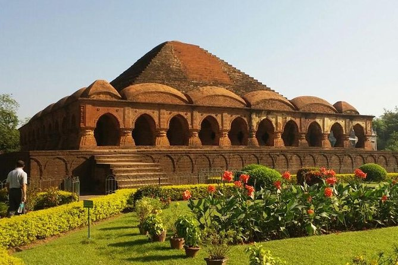

- Location: Bankura district, West Bengal, India
- Famous For: Terracotta temples and classical music (Bishnupur Gharana)
- Main Temples: Rasmancha, Jor Bangla Temple, Madan Mohan Temple, Shyam Rai Temple
- Built By: Malla Kings, especially under King Raghunath Singha Dev
- Period: 17th and 18th centuries
- Architecture Style: Unique blend of Bengali hut-style with terracotta carvings depicting mythological scenes
- Material Used: Burnt clay bricks and terracotta tiles
- Speciality: Depictions of scenes from Ramayana, Mahabharata, and Krishna Leela
- Opening Hours: 6:00 AM - 6:00 PM (All Days)
- Entry Fee: Free (Some temples may have nominal charges for photography)
- Maintained By: Archaeological Survey of India (ASI)
- Nearby Attractions: Dalmadal Cannon, Bishnupur Museum, Lalbandh Lake
- Popular For: Heritage walks, architectural photography, spiritual visits
- Best Time to Visit: October to February